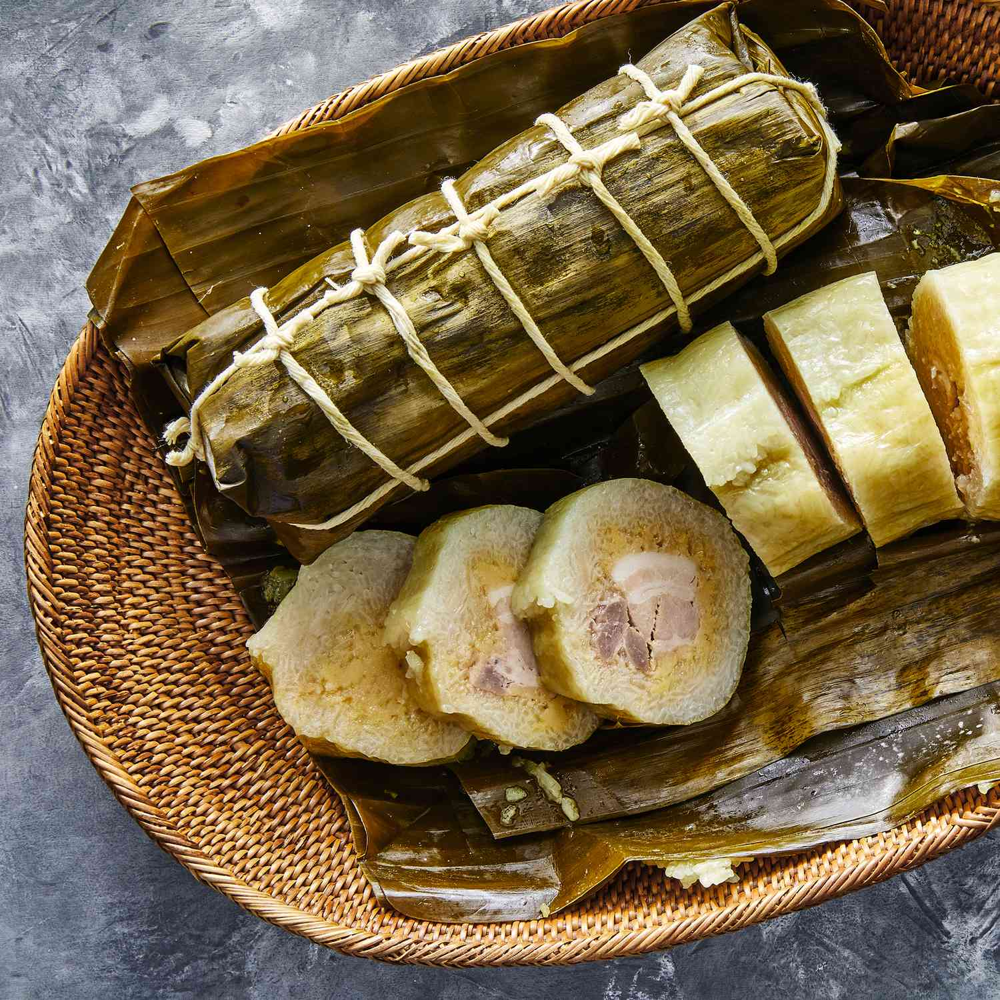

Banh Tet

Description
Banh Tet is a traditional Vietnamese dish that is nothing short of a culinary wonder. This dish is a celebration of the flavors and textures of Vietnam's rich culinary heritage and it has captured the hearts and palates of food lovers all over the world.
Banh Tet is a cylindrical glutinous rice cake filled with a mouth-watering combination of pork, mung beans, and mushrooms. The rice is seasoned with a hint of turmeric to give it a beautiful golden color. Once the cake is cooked, it is sliced and served with a variety of savory dipping sauces and fresh herbs.
The key to a perfect Banh Tet is in the balance of flavors and textures. The rice should be cooked to perfection, chewy and fragrant, while the filling should be savory and perfectly seasoned. The herbs and sauces add a burst of freshness and a range of flavors that perfectly complements the cake.
Traditionally, the Banh Tet is wrapped in banana leaves and tied with string before being boiled. The leaves not only add a distinct aroma to the dish, but it also helps to hold the shape of the cake, and makes it easy to transport and eat it on-the-go.
Banh Tet is more than just a meal, it's a cultural experience. Each bite of the glutinous rice cake, each sip of the savory sauces is a journey through the rich culinary history of Vietnam. It's a dish that evokes memories and emotions, and it's a true celebration of the country's rich heritage.
It's a dish that is delicious, hearty and satisfying, and it is sure to be a crowd-pleaser, even for those who are trying it for the first time.
Ingredients
- Glutinous rice - 2 cups
- Turmeric powder - 1 teaspoon
- Pork (ground) - 8 oz
- Mung beans - 1/4 cup
- Dried mushrooms - 2-3 pieces
- Shallot - 2, thinly sliced
- Salt and pepper to taste
- Banana leaves - 4-6, for wrapping
- String, for tying
- Dipping sauce, for serving
- Fresh herbs, for serving (optional)
Steps
- Soak the glutinous rice in water for at least 2 hours, or overnight.
- Soak the dried mushrooms in warm water for 20-30 minutes, or until softened. Remove the stems and finely chop the caps.
- In a pan, cook the ground pork until browned. Add the mushrooms, mung beans, shallots, turmeric powder, salt and pepper. Cook until the mung beans are tender. Let the mixture cool down.
- Drain the glutinous rice and grind it in a food processor or a mortar and pestle to a fine consistency.
- Lay out a banana leaf on a work surface, with the smooth side facing up and the shiny side facing down. Place about 1/4 cup of the rice mixture in the center of the leaf and use your fingers to press and shape it into a small cylinder (about 4-5 inches in length and 2 inches in diameter) . Make a small well in the center of the cylinder and fill it with about 2 tablespoons of the pork filling. Cover the filling with more rice mixture and shape it into a cylinder again. Repeat the process with the remaining leaves, rice and filling.
- Wrap the cylinder tightly with the banana leaf, folding the edges to enclose the cylinder completely. Tie each end of the cylinder with a piece of string. You can make more or fewer ties, depending on the size of the leaf and the cylinder.
- In a large pot, bring enough water to a boil and gently place the cylinders into the water. Bring the water to a simmer and cook for about 45 minutes to 1 hour. The banana leaves should be a dark green color and the rice should be fully cooked.
- Remove the banh tet from the pot and let them cool down. Carefully unwrap the banana leaves and cut the cakes into thick slices. Serve with dipping sauce and herbs.
Credits
Special thanks to CHatGPT!